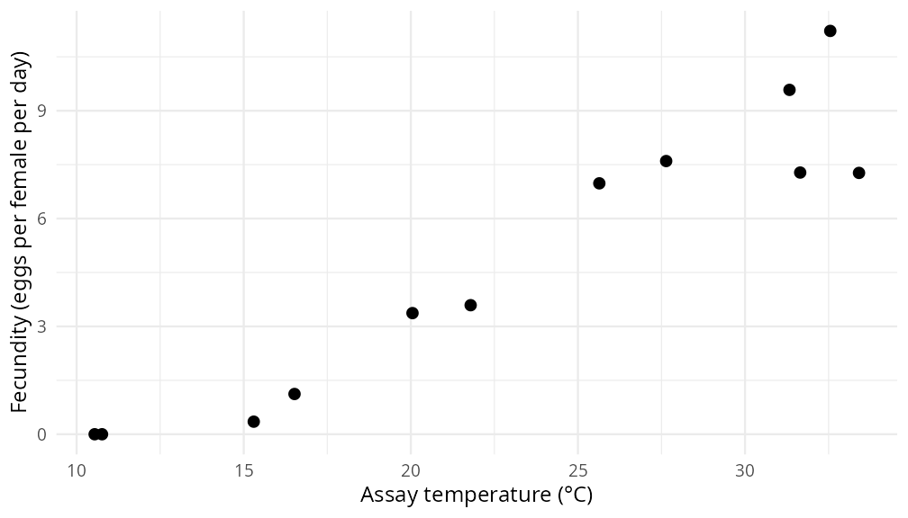
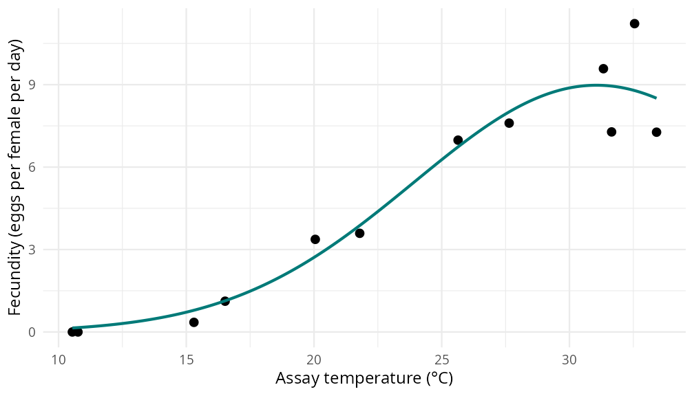
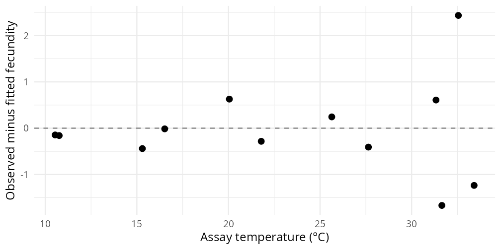

9 Thermal Performance Curves
9.1 Overview
At what temperature does a mosquito produce the most eggs? And how much can we learn about that temperature from a small set of laboratory measurements?
In this workshop we will fit a thermal performance curve (TPC) to mosquito
fecundity data using the rTPC package. We will concentrate on understanding the data, fitting
one model and interpreting what it tells us. You can then use the same workflow
with a different trait in the challenge task.
9.1.1 Learning Objectives
By the end of the workshop, you should be able to:
- Recognise trait data suitable for fitting a TPC.
- Use
rTPCmodel functions andnls.multstartto fit a nonlinear curve. - Plot the fit, interpret its parameters and identify important limitations.
- Adapt this workflow to a named Hub dataset in the challenge task.
We will build on Wednesday’s Hub retrieval,
wrangling and plotting skills. You will need ggplot2, rTPC and
nls.multstart; ohvbd is needed to retrieve fresh data.
Use this page alongside RStudio. If you already have the repository, open
vbd-hub-training-workshops.Rproj. Otherwise, create an RStudio project for the
workshop and make folders called data and then tpc inside it. The saved
example can be downloaded below into data/tpc/; you can also work directly
with the data retrieved through ohvbd.
Our goal for the hour: inspect a trait dataset, obtain one fit, plot it and explain its peak and one limitation. The residual checks and reduced-temperature exercise are extensions if time allows. You can follow the discussion using the figures on this page while a demonstrator helps with any coding problems.
| Time | Activity |
|---|---|
| 11:30–11:40 | Traits, temperature and nonlinear responses |
| 11:40–11:50 | Inspect and plot mosquito fecundity |
| 11:50–12:05 | Fit a TPC using rTPC
|
| 12:05–12:20 | Interpret the curve and compare it with the observations |
| 12:20–12:30 | Prepare for the challenge; optional extension if time allows |
9.2 From Traits to Thermal Performance
A trait is a measurable feature of an organism: body size, development rate, survival or egg production, for example. Compare today’s data with the abundance plots you have already made:
| Quantity | What it describes | An example question |
|---|---|---|
| Abundance | Mosquitoes counted at a site or time, with a particular sampling method | When were more mosquitoes captured? |
| Fecundity rate | Eggs produced per female per day under specified conditions | How does temperature affect individual egg production? |
Traits help explain the processes behind population patterns. Egg production can contribute to recruitment, development determines how quickly juveniles reach later stages, and survival affects how many remain alive. Population abundance also depends on resources, density and other conditions. Disease transmission additionally depends on traits such as biting and pathogen development. Following these connections helps us ask useful questions without treating one trait as a complete measure of disease risk.
Mosquitoes are ectotherms, so temperature affects the biological processes that support their performance. Many rates rise as temperature increases, then fall as high temperatures impair function. A TPC describes this relationship for a particular trait and experimental context. Different traits can have different temperature responses and different optima.
Why might a peak occur? At low temperatures, slow biochemical processes can limit rates such as development and reproduction. Warming can accelerate these processes over part of the temperature range. At high temperatures, heat stress can impair physiological function and reduce survival or reproduction. The balance of these effects can produce a curved response. Acclimation and other experimental conditions can change that response too.
This biological reasoning motivates fitting a TPC. It does not specify its exact shape or optimum: those need to be assessed using the data. Nor should we expect the temperature of maximum egg production to maximise every other trait.
Predict before fitting: sketch what you expect egg production to look like across temperature. Would a straight line capture your prediction? What would you need to measure to establish where performance declines?
Trait datasets can be tricky because a row may describe an individual, a group mean or a value digitised from a published figure. Studies can also differ in life stage, sex, food supply and units. Eggs per female per day and eggs per female per reproductive cycle are different measurements. Likewise, assay temperature and the temperature at which animals were reared need not be the same. Check these details before combining records.
9.3 Inspect the Mosquito Fecundity Data
Our example is VecTraits dataset 474, containing Aedes aegypti fecundity rates from Yang et al. (2009). The records describe adult females from Marilia, Brazil, with temperature in Celsius and fecundity in eggs per individual per day.
This practical adapts the MQB nonlinear least-squares chapter. We use the Hub’s single-study Yang dataset. The MQB CSV also includes Beserra records, and its Yang values differ slightly from the VecTraits digitisation; we are not pooling those sources here.
9.3.1 Retrieve the worked example
You already know how to find data through the Hub. Here the dataset ID is known, so we can retrieve just this dataset. Inspect its fields before selecting the assay temperature and trait value:
fecundity_raw <- ohvbd::fetch_vt(474) |> ohvbd::glean()
# Inspect the fields before selecting the assay temperature and response.
fecundity_raw[, c("DatasetID", "OriginalTraitName", "Interactor1Temp",
"Interactor1TempUnit", "OriginalTraitValue",
"OriginalTraitUnit")]Check that these are fecundity rates for adult females in the same experimental context. Then give the columns convenient names for plotting and fitting. This is the same sort of column selection and renaming you practised on Wednesday:
tpc_data <- data.frame(
record_id = fecundity_raw$Id,
dataset_id = fecundity_raw$DatasetID,
species = fecundity_raw$Interactor1,
trait = fecundity_raw$OriginalTraitName,
temp = fecundity_raw$Interactor1Temp,
rate = fecundity_raw$OriginalTraitValue,
unit = fecundity_raw$OriginalTraitUnit,
source_doi = fecundity_raw$DOI,
curation_doi = fecundity_raw$CuratedByDOI
)
tpc_data <- tpc_data[order(tpc_data$temp, tpc_data$record_id), ]9.3.3 Check and plot your table
head(tpc_data[, c("dataset_id", "temp", "rate", "unit")])
range(tpc_data$temp)
sum(is.na(tpc_data$temp) | is.na(tpc_data$rate))There are 12 records over approximately 10.5–33.4 °C. These are study summaries, not 12 individual mosquitoes. Keep the genuine zero fecundity values: they are biologically informative. We have retained the original units, record IDs and citations in the saved files.
fecundity_plot <- ggplot(tpc_data, aes(temp, rate)) +
geom_point(size = 2.5) +
labs(x = "Assay temperature (°C)",
y = "Fecundity (eggs per female per day)") +
theme_minimal(base_size = 12)
fecundity_plot
Discuss: is there a clear decline at the hottest temperatures? Write one sentence describing the pattern and one limitation of the temperature coverage.
9.4 Fit a Nonlinear Curve
With nonlinear least squares (NLLS), we propose a curve and adjust its parameters to minimise the sum of squared vertical distances between the observations and the curve. Those distances are the residuals. The fitting algorithm searches iteratively, so its starting values and parameter limits matter.
rTPC supplies model functions and helpers for choosing starting values and
limits. nls.multstart performs the fitting from several sets of starting
values, reducing the risk of accepting a poor solution. We still have to check
the result!
We will start with the Gaussian model, which has three interpretable parameters. Before running the code, predict how changing each would affect the curve:
| Parameter in R | Meaning | Units in this example |
|---|---|---|
rmax |
Height of the peak | Eggs per female per day |
topt |
Temperature at the peak | °C |
a |
Width of the curve | °C |
This is a descriptive model: its fitted shape summarises the observations. It does not separately estimate the physiological processes discussed above. It is symmetric around its peak, whereas many biological TPCs are asymmetric. It also does not estimate finite temperatures at which performance becomes zero.
Optional: the Gaussian equation
\[ P(T) = R_{\max}\exp\left[-\frac{1}{2} \left(\frac{T-T_{\mathrm{opt}}}{w}\right)^2\right]. \]
The width parameter \(w\) corresponds to a in the R function.
First, ask rTPC for starting values and limits:
tpc_start <- get_start_vals(tpc_data$temp, tpc_data$rate,
model_name = "gaussian_1987")
tpc_lower <- get_lower_lims(tpc_data$temp, tpc_data$rate,
model_name = "gaussian_1987")
tpc_upper <- get_upper_lims(tpc_data$temp, tpc_data$rate,
model_name = "gaussian_1987")
tpc_lower["a"] <- 0.01 # the curve width must be positive
tpc_startUse these supplied starting values and limits for your first fit. We will interpret the resulting curve before exploring the search settings in detail.
set.seed(2026)
tpc_fit <- nls_multstart(
rate ~ gaussian_1987(temp, rmax, topt, a),
data = tpc_data,
iter = 100,
start_lower = pmax(tpc_lower, tpc_start * 0.1),
start_upper = pmin(tpc_upper, tpc_start * 1.5),
lower = tpc_lower,
upper = tpc_upper,
supp_errors = "Y",
convergence_count = FALSE
)Optional: how the search is set up
These helpers constrain topt to the observed temperature range. That is a
modelling choice, not evidence that we have measured the true optimum. For the
starting search, we use one-tenth to one-and-a-half times each initial estimate,
clipped to the parameter limits. This example has positive starting values
throughout.
iter = 100 requests 100 starting combinations. The start ranges control where
searches begin; lower and upper constrain the fitted parameters themselves.
Some starting combinations can fail, which is why we suppress their individual
error messages. A successful search still needs a biologically sensible result.
9.5 Interpret and Check the Fit
You should obtain approximately 9 eggs per female per day at a fitted peak near 31 °C, with width about 7.1 °C. These are model estimates, and the highest observed point need not lie on the fitted curve. Convergence tells us the numerical search stopped successfully; it does not establish that the model is appropriate or its parameters precisely known.
Generate predictions within the observed temperature range and compare them with the measurements:
tpc_predictions <- data.frame(
temp = seq(min(tpc_data$temp), max(tpc_data$temp), length.out = 200)
)
tpc_predictions$rate <- predict(tpc_fit, newdata = tpc_predictions)
tpc_plot <- fecundity_plot +
geom_line(data = tpc_predictions, colour = "#007A78", linewidth = 1)
tpc_plot
Pause and interpret: point to the fitted peak and give its units. Explain why it differs from the highest observation. Then identify one part of the temperature response for which you would want more measurements.
This unweighted fit gives every summary value equal weight. The limited hot-side coverage and the assumed curve shape affect our estimate of the peak. Treat it as an exploratory fit. For the challenge, your essential result is a labelled plot, an interpretation of the peak and a limitation supported by the data. Do not interpret this one-trait optimum as the optimum for population growth or disease transmission.
9.5.1 Optional: look more closely at the residuals
Now inspect the residuals. Are they scattered around zero, or is there a pattern suggesting that the curve misses part of the response?
tpc_residuals <- data.frame(temp = tpc_data$temp,
residual = residuals(tpc_fit))
ggplot(tpc_residuals, aes(temp, residual)) +
geom_hline(yintercept = 0, linetype = "dashed", colour = "grey50") +
geom_point(size = 2.5) +
labs(x = "Assay temperature (°C)",
y = "Observed minus fitted fecundity") +
theme_minimal(base_size = 12)
The usual error assumptions include independent errors with comparable variance; the incomplete replicate and error metadata do not let us establish these from the table alone. Neither the fit nor its convergence measures uncertainty by itself.
9.5.2 Optional extension: remove the hottest observations
If you are ready for more — five minutes: predict what will happen if you remove observations
above 30 °C. Create a copy of tpc_data, filter it, then rerun the starting-value
and fitting steps. Compare its fitted peak with the original. Remember that the
helper now also changes the allowed range of topt. Has information about the
optimum improved, or have you simply forced the model to return a number?
Restore the original tpc_data from its CSV when you finish.
Bootstrap uncertainty and more complex model comparisons are useful next steps for subsequent study. The rest of today’s practice will be in the challenge.
9.6 Key Takeaways
- Check the trait, assay temperature, units and experimental context before fitting.
-
rTPChelps specify a curve;nls.multstartsearches for its fitted parameters. - Plot observations, predictions and residuals, then ask whether the model makes biological sense.
- A numerical optimum can be poorly supported when temperature coverage is limited.
The explanation and example are adapted from Samraat Pawar’s MQB materials.
For the data, cite Yang et al. (2009)
and the Pawar et al. (2024) curation source.
Use citation("rTPC"), citation("nls.multstart") and citation("ohvbd") to
obtain software citations.